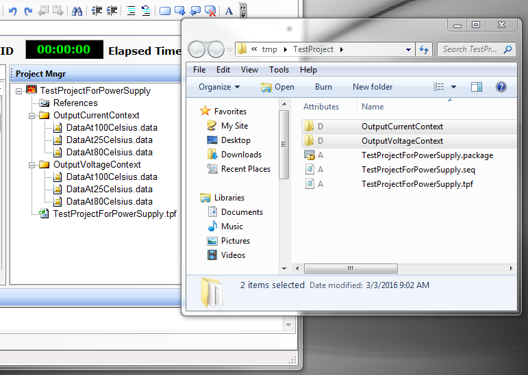

The new package feature becomes helpful in conjunction with ActivATE Project Manager supporting the concept of Data Files.
As implemented now, a Data File can be any file whose extension is different than the typical source file extension (.cs for CSharp projects, or .vb for VBDotNet projects). VBScript projects do not support Data Files. At build time, the data files are recognized after their extension, and not involved in the compilation process. However, when a Package is created for deployment, they are included while the source files are excluded.
The distribution of the source and data files in the ActivATE IDE Project Manager may now be structured in a multilevel folder structure.
The multilevel folder structure in ActivATE IDE must always be relative to the root folder of the project, which is the folder parent of sequence file.
A multilevel folder structure may be easily created by dragging any folder structure from Microsoft Explorer and dropping it on an ActivATE Project Manager folder or its root. At drop time, a copy operation occurrs of the dragged folder(s) to the folder target in ActivATE folder.
In the picture below, two folders of data files were dragged from Microsoft Explorer and dropped on the ActivATE root folder:

Other links:
Introduction Package Creation Package Usage
Astronics Test Systems
Last updated on 2/27/16 I. Zolog